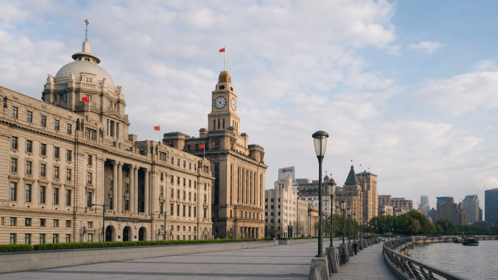
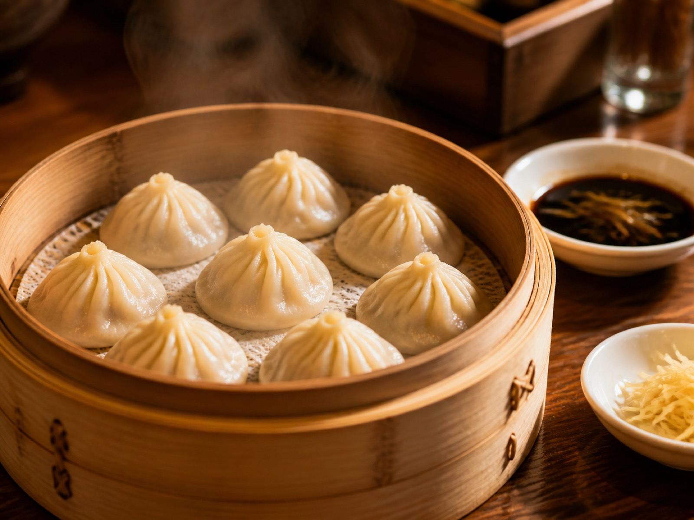
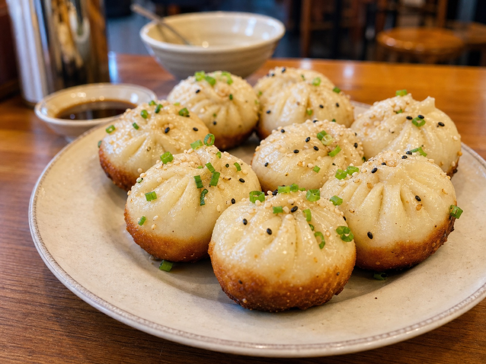
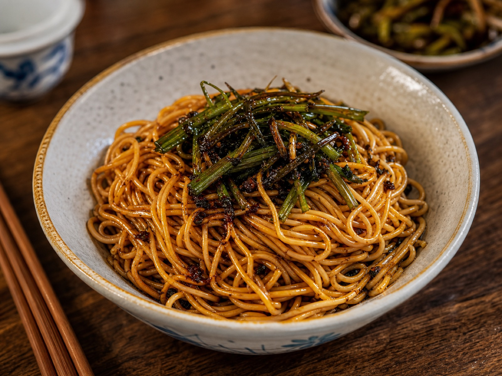
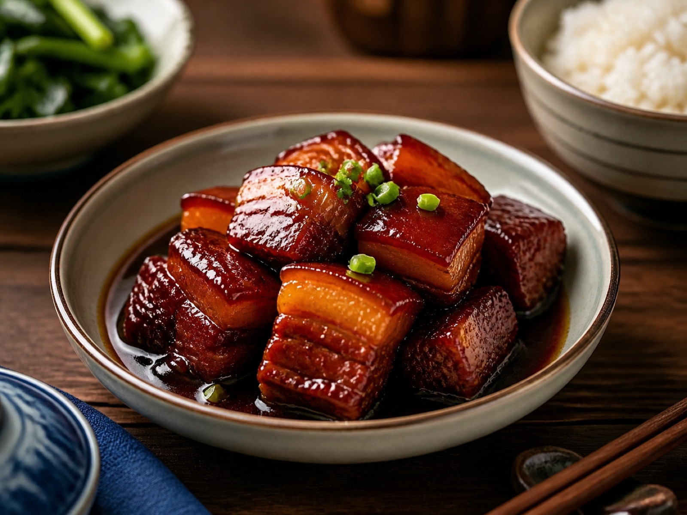
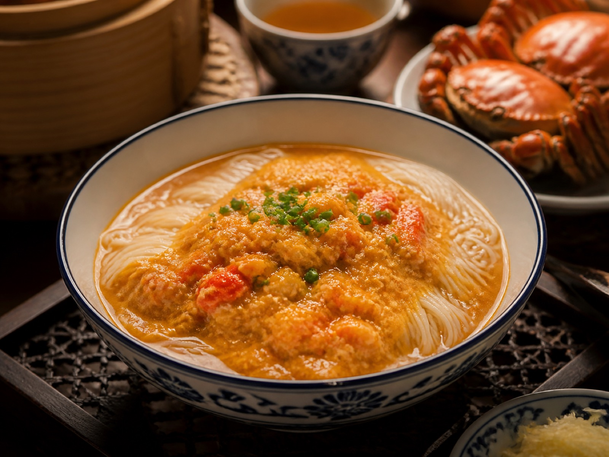
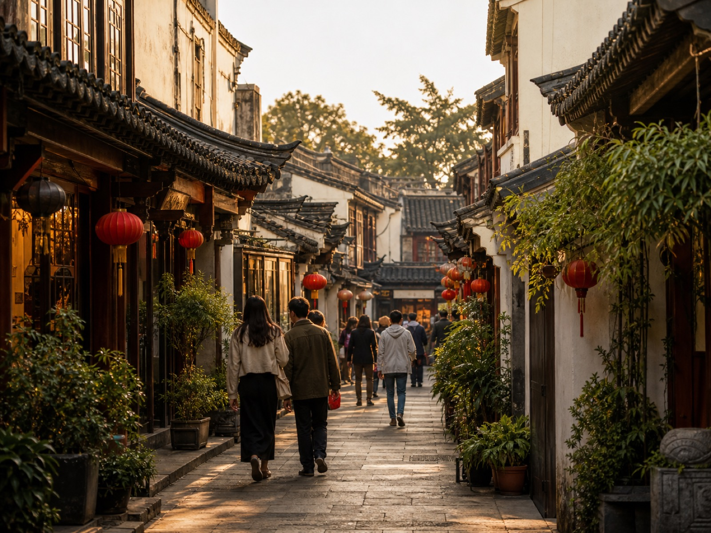
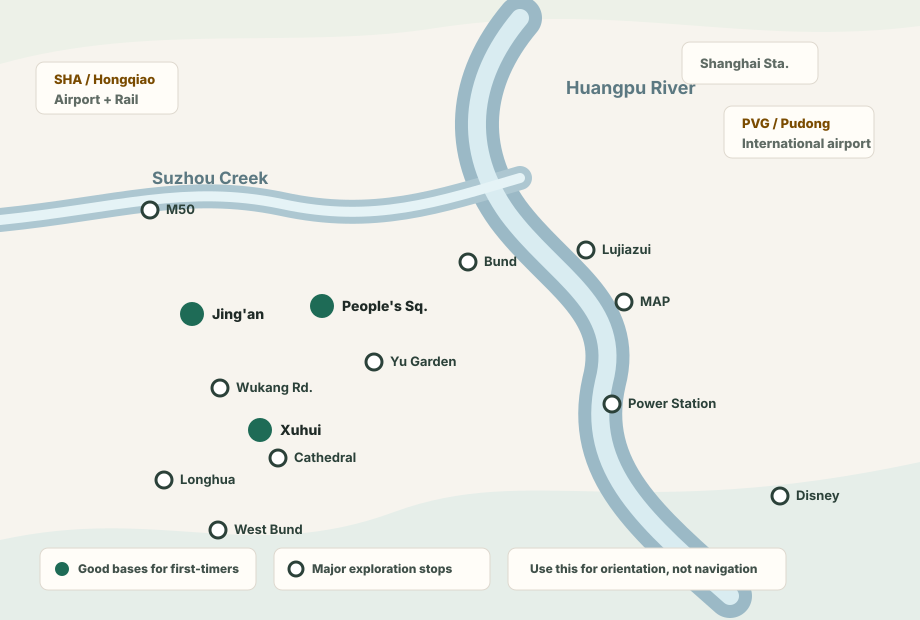

Explore Shanghai on your own: sights, food, routes, and where to base yourself.
Shanghai is one of the easiest Chinese cities to explore independently. Use this page to choose low-friction places, understand which stops need booking, and keep your day flexible when crowds build up.
Choose Your Shanghai Exploration Mode
Pick by travel mood, not by a giant checklist. Each section ranks practical stops by how easy they are to understand, book, and combine into a real day.
Modern city
Start with skyline, river walks, and first impressions

#1 Classic sight
The Bund
Opened as a treaty-port waterfront in the 1840s; today it is the best first-night walk for historic facades, river light, and old Shanghai texture.
✈SHA 70-100 car / 90-120 metro · PVG 25-45 car / 45-65 metro
Move Around Shanghai Like an Independent Explorer
Shanghai is one of the easiest Chinese cities for independent transport. The metro should be your default, taxis are useful with saved Chinese addresses, and airport transfers depend on arrival time and luggage.
Metro
Use metro for most city days
Best for People's Square, Jing'an, Xuhui, Lujiazui, museums, and stations.
Bilingual signs make transfers predictable.
Typical cost: ¥3-10 per ride.
Use Alipay transit QR or station machines.
Taxi / ride-hailing
Save Chinese addresses before you leave
Best late at night, with luggage, or after dinner.
Malls, stations, and the Bund may have confusing pickup points.
Typical cost: ¥20-120 in the city.
Show: 请带我去这个地址。谢谢。
Airports
Choose airport transport by arrival time
SHA/Hongqiao is easier for downtown and high-speed rail.
PVG/Pudong is farther but better for many international flights.
Typical metro cost: ¥5-10; taxi/transfer: ¥100-250+.
Late arrivals are usually simpler by direct car.
Trains
Use high-speed rail for Suzhou or Hangzhou
Shanghai Hongqiao handles many fast regional trains.
Book with the same passport you travel with.
Typical cost: ¥40-180+ for nearby cities.
Arrive early for security and station navigation.
Eat Your Way Through Shanghai
Shanghai food is often slightly sweet, soy-sauce rich, and less spicy than Sichuan or Hunan food. Many local meals are casual and affordable, but the ordering flow can still be hard if the menu is only in Chinese.
How to think about local food
Benbang cuisine: braised, glossy, savory-sweet, and soy-forward.
Haipai food: old Shanghai-style western dishes shaped by the city's port history.
Vegetarian caution: vegetables may still use pork fat, meat broth, shrimp, or oyster sauce.

Soup dumplings
Xiaolongbao → Jia Jia Tang Bao
Pork-based soup dumplings; bite carefully and use vinegar with ginger.
¥25-80EasyExpect queues

Pan-fried buns
Shengjian → Yang's Fried Dumplings
Crisp-bottom soup buns; good for breakfast, lunch, or a fast snack stop.
¥15-50EasyQuick meal

Noodles
Scallion oil noodles → Fu Chun
Simple, fragrant noodles that work well when you want a low-risk local meal.
¥20-60EasyCasual

Benbang classic
Hongshao pork → Lao Zheng Xing
Red-braised pork with soy sauce and sugar; better as a sit-down shared meal.
¥120-300EasyClassic dining

Seasonal
Crab roe noodles → Xie Zun Yuan
Rich crab-roe noodles; more expensive, seasonal, and best when crab is in season.
¥80-300+MediumSeasonal

Vegetarian route
Vegetarian meal → search 素食 / 素菜
Use dedicated vegetarian restaurants when possible; confirm broth, sauces, and garnish.
¥40-200MediumConfirm ingredients
Pick a Base After You Know Your Shanghai Route
Choose where to stay after you know what kind of explorer you are: skyline-first, museum-heavy, food-focused, or slow-walk oriented. The goal is a base that reduces daily friction.
Most practical
People's Square
Best for museums, the Bund, Yu Garden, metro links, and classic sightseeing.
Good first-timer base if you want short, predictable city days.
Choose hotels close to Line 1, 2, or 8 when possible.
Most comfortable
Jing'an
Best for hotels, restaurants, shopping, temples, and west-side access.
Good if you want an easy evening area after sightseeing.
Often simpler for taxis than deeper residential neighborhoods.
Best for slow walks
Xuhui
Best for Wukang Road, cafes, leafy streets, and local wandering.
Good if your Shanghai trip is less checklist-driven.
Check metro distance carefully before booking.
Best for skyline + Pudong art
Lujiazui / Pudong Riverside
Best for Shanghai Tower, Lujiazui Riverside, and Museum of Art Pudong.
Good if you want polished hotels and a quieter night base.
Less convenient for old-city walks, Xuhui cafes, and west-side museums.

Orientation map for planning. Use a real map app for walking, metro exits, and live traffic.